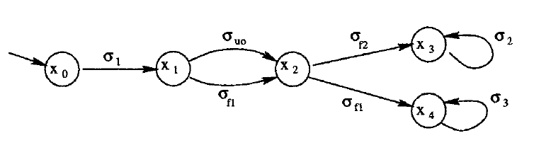
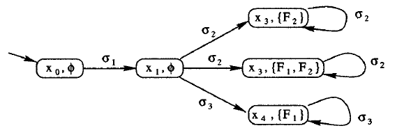
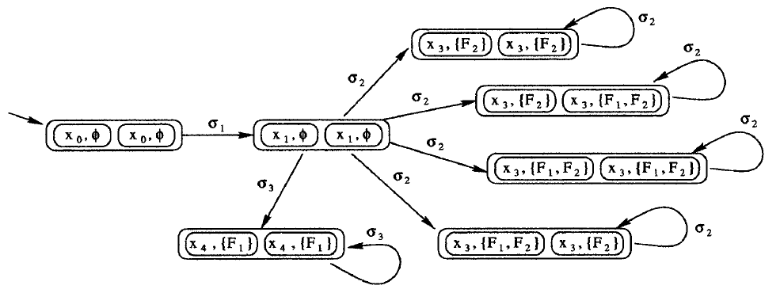

文献翻译：一个测试离散事件系统可诊断性的多项式时间算法
authors: Shengbing Jiang, Zhongdong Huang, Vigyan Chandra, and Ratnesh Kumar
原文: A polynomial algorithm for testing diagnosability of discrete-event systems
Abstract
大型复杂系统中的错误诊断是一项关键任务。在离散事件系统（DES）领域，Sampath 等人提出了一种基于语言的错误诊断方法。他们为DES引入可诊断性概念和定义，并使用根据系统构建的诊断器来测试系统的可诊断性。这种测试可诊断性的方法的复杂度是系统状态数的指数级别的，对于系统错误数量是双倍指数级别的。本文给出一种不构建系统诊断器的可诊断性测试算法，其复杂度在系统状态数上是四阶的，在故障类型数上是线性的。
Index Terms: Complexity, diagnosability, discrete event system, failure diagnosis.
I. INTRODUCTION
错误诊断是大型复杂系统的一项关键任务。这个问题在包括离散事件系统123456在内的各个领域的文献中都得到了相当多的关注。在4中，Sampath等人提出了一种离散事件系统的错误诊断方法。他们提出了可诊断性的概念，并给出了测试可诊断性的充分必要条件。他们将条件表示为诊断器的一个属性。为了测试系统可诊断性，首先需要构造诊断器。构造诊断器和测试可诊断性的复杂度是系统状态数的指数级别的，对于错误事件数是双倍指数级别的。
显然，如果我们能够不构建诊断器的情况下，来测试目标系统的可诊断性，那么我们将可以节省为不可诊断系统构建诊断器的时间。在本文中，我们给出一种无需构造诊断器即可测试可诊断性的方法。该方法的复杂度是系统状态数量和错误事件数量的多项式。接下来，我们首先介绍离散事件系统的可诊断性概念，然后介绍我们的测试算法，最后，给出一个说明性的例子。
II. DIAGNOSABILITY
我们首先给出系统模型，然后介绍由4提出的可诊断性定义。
A. System model
令$G = (X,\Sigma,\delta,x_0)$是待诊断系统的有限状态机模型，其中
- $X$ 是一个状态有限集
- $\Sigma$ 是一个事件标签的有限集
- $\delta\subseteq X\times\Sigma\times X$ 是状态转移有限集
- $x_0\in X$ 是系统的初始状态
我们假设所有状态自动机是可达的（accessible，所有状态可以从初始状态出发，经若干转移后到达），否则我们只考虑状态自动机中的可达部分。
我们用表示包含所有有限长度事件序列的集合，其中包括空序。把集合中的一个元素称为串（trace），用的子集表示语言（language）。
对于一个串和事件，我们用表示事件包含于串中，即串发生了事件。系统中的一个路径（path）是一个状态转移序列，其中对于每个，如果，则表示该路径是一个环（cycle）。我们用来描述系统的生成语言，即系统从初始状态开始能够执行的串的集合。同时假设是前缀闭合（prefix-closed）的，即，其中是一个由所有中的串的前缀组成的集合。用表示系统的可观事件集，表示不可观事件集，表示一个观察映射函数，表示错误类型的集合，表示一个为中每个事件错误分配的函数（failure assignment function）。$M$的定义通常从$\Sigma$扩展到，如下所示：$M(\varepsilon)=\varepsilon$，并且对于每一个串。
对于本文研究的系统，和4一样，我们作出以下假设：
- A1) 系统$G$的生成语言是活语言（live language）。这意味着系统中的每一个状态均定义相应的状态转移。
- A2) 系统$G$中不存在不可观事件的环。
- A3) 所有错误事件均是不可观的，即$(\forall\sigma\in\Sigma,\psi(\sigma)\neq\emptyset)\Rightarrow M(\sigma)=\varepsilon$。
B. Diagnosability
离散事件系统的可诊断性4定义描述如下：
Definition 1: 一个前缀封闭语言$L$关于观察映射$M$和错误分配函数$\psi$是可诊断的当：
其中$s_f$和$u_f$分别表示串$s$和串$u$的最后一个事件，$pr({w})$是$w$所有前缀组成的集合。如果系统$G$的生成语言$L(G)$是可诊断的，则该系统是可诊断的。
根据上面定义，若$s$是$L$中一个以$F_i$错误事件结尾的串，$v$是$s$的任意一个充分长后缀，则任意一个$L$中与$v$拥有相同观察序列的的串$w$，即$M(w)=M(v)$，串$w$中一定包含错误事件$F_i$。
III. ALGORITHM
我们现在展示测试可诊断性的算法。
Algorithm 1: 对于给定系统$G=(X,\Sigma, \delta, x_0)$，一个观察映射$M$和一个错误分配函数$\psi$，做以下操作：
- 1) 获取一个非确定有限状态自动机（nondeterministic finite-state machine）$G_o = (X_o,\Sigma_o,\delta_o,x^o_0)$，其中语言$L(G_o)=M(L(G))$：
- $X_o = {(x,f)|x\in X_1\cup{x_0},f\subseteq F}$是自动机的有限状态集，其中$X_1={x\in X|\exists(x’,\sigma,x)\in\delta 且 M(\sigma)\neq\varepsilon}$是$G$能通过可观序列转移到达的状态组成的集合，$f$是一个从$x_0$到$x$的路径的错误类型。
- $\Sigma_o$是可观事件集，$G_o$的事件标签集合。
- $\delta_o\subseteq X_o\times\Sigma_o\times X_o$是状态转移集。$((x,f),\delta,(x’,f’))\in \delta_o$当且仅当对于$\forall i \in {1,2,…,n}, M(\sigma_i)=\varepsilon, M(\sigma)=\sigma$且$f’={\psi(\sigma_i)|\psi(\sigma_i)\neq\emptyset, 1\leq i\leq n}\cup f$，系统$G$中存在这样一个路径$(x,\sigma_1,x_1,…,\sigma_n,x_n,\sigma,x’)(n\geq 0)$。
- $x^o_0=(x_0,\emptyset)\in X_o$是$G_o$的初始状态。
- 2) 计算$G_d=(G_o||G_o)$，即$G_o$与其自身的严格组合（composition）计算。$G_o=(X_d,\Sigma_o,\delta_d,x^d_0)$，其中
- $X_d={(x^o_1,x^o_2)|x^o_1,x^o_2\in X_o}$ 是状态集；
- $\Sigma_o$是$G_d$的事件标签集；
- $\delta_d\subseteq X_d\times\Sigma_o\times X_d$是状态转移集。$((x^o_1,x^o_2),\delta,(y^o_1,y^o_2))\in \delta_d$当且仅当$(x^o_1,\sigma, y^o_2)$和$(x^o_2,\sigma,y^o_2)$均包含于$\delta_o$中；
- $x^d_0$是$G_d$的初始状态。
- 3) 检查$G_d$中是否存在这样一个环$cl = (x_1,\sigma_1,x_2, …, x_n, \sigma_n, x_1), n\geq 1, x_i = ((x^1_i, f^1_i),(x^2_i,f^2_i)), i = 1, 2, …, n$, 使得 $f^1_1\neq f^2_1$。如果存在，则输出该系统是不可诊断的，最后这一步骤可以先标识$G_d$中的状态$((x^1,f^1),(x^2,f^2))$，其中$f^1\neq f^2$，然后删除其他所有状态以及相关的转移，判断剩余的图中是否存在环即可得到结果。
接下来，我们给出两个定理，展示Algorithm 1 中状态机$G_o$和$G_d$的一些属性。这里省略了证明，因为它们可以直接遵循$G_o$和$G_d$的定义得到。
Lemma 1: 对于状态机$G_o$：
- 1) $L(G_o) = M(L(G))$；
- 2) 对于$G_o$中每一个作为环的路径$tr$：
我们有
- 对于任意$i, j\in {k,k+1,…,n}; f_i=f_j$；
Lemma 2: 对于$G_d$中每一个作为环的路径$tr$：有：
- 1) $G_o$中存在两个作为环的路径 $tr_1$和$tr_2$：
- 2) 对于任意$i, j \in{k, k+1, …, n}$, 有$(f^1_i=f^1_j) \land (f^2_i=f^2_j)$。
接着，我们再提供一个定理确保Algorithm 1的正确性。
Theorem 1: $G$ 是可诊断的当且仅当$G_d$中的每一个环$cl$：
我们有$f^1=f^2$。
Proof: 对于必要性，假设$G$是可诊断的，但中存在一个环$cl$，使得$f^1\neq f^2$。因为$G_d$是可达的，$G_d$中存在一个以环$cl$结尾的路径$tr$，即$tr = (x^d_0,\sigma_0,x_1,…,x_k,\sigma_k,…,x_n,\sigma_n,x_k)$。据Lemma 2，$G_o$中存在两个路径$tr_1$和$tr_2$：
更多地，根据Lemma 1，我们可得使得 并且。因为$f^1\neq f^2$，我们假设$F_k\in f^1 - f^2\neq \emptyset$。然后$\exists s\in L(G)$使得 $\psi(s_f)=F_k$ 且对于某些。对于任意整数$n_k$，我们可以选择另一个整数$l$，使得$\lVert tv^l_1\rVert >n_k$。
则有$M(u_2,v^l_2)=M(stv^l_1)$并且，这意味着$u_2v^l_2$中不包含任何类型为$F_k$对应的错误事件。因此，根据可诊断性的定义，系统$G$是不可诊断的。与假设矛盾，所以必要性成立。
对于充分性，假设$G_d$中的每一个环$cl$，$cl = (x_1,\sigma_1,x_2,…,x_n,\sigma_n,x_1), n\geq 1, x_i=((x^1_i,f^1),(x^2_i,f^2)), i = 1, 2, …, n$, 我们有$f^1=f^2$。
根据Lemma 2的第二句，我们知道该假设意味着$\forall x = ((x^1,f^1),(x^2,f^2)) \in X_d, if f^1\neq f^2$，则$x$不包含于一个循环中。更进一步地，对于$x_i=(x^1_i,f^1_i),(x^2_i,f^2), 1 \leq i\geq k$, $G_d$中的任意状态序列$(x_1,x_2,…,x_k)$，如果对于$\forall i\in {1,2,…,k}$有$f^1_i\neq f^2_i$，则状态序列的长度限制在$G_d$状态数之内，即$k\leq |X_d|$。
现在，令$s$是$L(G)$中以$F_k$类型错误事件结尾的串，即$\psi(s_f)=F_k$，我们称对于$\lVert t\rVert > |X_d|\times(|X|-1), \forall w\in L(G), M(w)=M(v)$， $\forall v=st\in L(G)$, 则$w$中包含$F_k$类型的错误事件。综上，对于任何从$x^d_0$出发通过执行$G_d$中$M(s)$到达的状态$x\in X_d$，有对于$G_d$中任意从$x$开始的状态序列，一个状态$y = ((y^1,f^1),(y^2,f^2))\in X_d, \land f^1=f^2$可以在$|X_d|-1$步之内到达。这意味着$\forall v = st \in L(G) \land \lVert M(t)\rVert > |X_d|, \forall w \in L(G) \land M(w)=M(v)$，$w$中必定包含$F_k$类型的错误事件。进一步假设$G$中不存在不可观环，任何$M(t)$中的可观事件最多可在$|X|-1$个不可观事件之后被跟踪到。因此，对于上面的串$t$，$\lVert t\rVert \leq ((\lVert M(t)\rVert + 1) \times (|X|-1)$，即$\lVert M(t)\rVert \geq \lVert t\rVert / (|X|-1)-1$。所以如果$\lVert t\rVert > |X_d|\times(|X|-1)$，则$\lVert M(t)\rVert\geq \lVert t\rVert/(|X|-1)-1 > (|X_d|\times(|X|-1))/(|X|-1)-1 = |X_d|-1$，确立我们的主张（注意，我们隐式地假设$|X|>1$；否则如果$|X|=1$，根据不存在不可观环的假设，将不存在任何使用错误标签的转移，系统显然是可诊断的）。根据Lemma 1，系统$G$是可诊断的，充分性也证明完毕。
Remark 1: 根据Algorithm 1，我们知道$G_o$中的状态数是$|X|\times 2^{|F|}$，$G_o$中的转移数是$|X|^2\times 2^{2|F|}\times|\Sigma_o|$。因为$G_d = G_o||G_o$，$G_d$中的状态数为$|X|^2\times 2^{2|F|}$，$G_d$中的转移数为$|X|^4\times 2^{4|F|}\times|\Sigma_o|$。
Algorithm 1的第一步，构造$G_o$的复杂度为$O(|X|^2\times 2^{2|F|}$， 而Algorithm 1的第二步，构造$G_d$的复杂度为$O(|X|^4\times 2^{4|F|}\times|\Sigma_o|)$。执行Algorithm 1的第三步，它适当地修剪$G_d$中检测到的“违规”环的的存在，与状态数和转移数是呈线性关系的，即$O(|X|^4\times 2^{4|F|})$。注意当移除所有不符合规则的环后，转移标签将是不相关的。
所以Algorithm 1的复杂度是$O(|X|^4\times 2^{4|F|}\times|\Sigma_o|)$，它是$G$中状态数的多项式级别和$G$中错误类型数的指数级别。
在4中，提供了另一个可诊断性的充分必要条件。该条件被表示为系统诊断器的一个属性。所以为了测试可诊断性，我们必须先构造目标系统的诊断器，然后检查诊断器的属性。其中构造诊断器和检查诊断器属性的复杂度都是系统状态数的指数级别和错误类型数的双倍指数级别。在Algorithm 1中，测试系统的可诊断性不需要构造诊断器。
Remark 2: 测试可诊断性的复杂度对于错误类型数量可以是多项式级别的，对于一个拥有错误类型$F = {F_i, i = 1, 2, …, m}$的系统是可诊断的，当且仅当系统的每一个错误类型$F_i, i = 1, 2, …,m$都是可诊断的。换句话说，对于每个单独的错误类型集${F_1}, …, {F_m}$应用Algorithm 1 $m$ 次。因为每一个错误类型集中只包含一个错误类型，根据Remark 1，可知每一次测试的复杂度为$O(|X|^4\times 2^{4|1|}\times|\Sigma_o|) = O(|X|^4\times|\Sigma_o|)$。因此，总的测试复杂度为$O(|X|^4\times|\Sigma_o|\times|F|)$。

Fig. 1. Diagram of system G.Example 1: 考虑一个系统 $G = (X, \Sigma, \delta, x_0)$
并拥有可观事件集。系统见图Fig. 1。令作为错误类型集，$\psi$是一个错误分配函数，。根据Algorithm 1的第一步，我们可以从$G$来获取$G_o$，见Fig. 2。Algorithm 1的第二步，计算$G_o$和其自身的严格组合，$G_d = G_o||G_o$，见Fig. 3。在Fig. 3中，在$((x_3,{F_2}), (x_3, {F_1,F_2}$上存在一个自环。所以，根据Algorithm 1的最后一步，我们知道该系统$G$是不可诊断的。

Fig. 2. Diagram of system Go.
Fig. 3. Diagram of system Gd.现在，我们假设不区分错误类型$F_1$和$F_2$，即令Fig. 3中$F_2 = F_1$并删除一些冗余的状态，我们计算修改后系统对应的$G_d$，这里忽略了该结果。在修改后的$G_d$中，不存在任何违反Algorithm 1中第三步规则的环。因此，修改后的系统是可诊断的。
IV. CONCLUSION
在本文中，我们提供了一个测试离散事件系统可诊断性的算法。与4中的测试方法相比，我们的算法无需为待诊断系统构造诊断器。我们算法的复杂度是系统状态数的四阶和错误类型数的线性阶。而4中测试方法的复杂度是系统状态数的指数阶和错误类型数的双倍指数阶。
1. Chen, Yi-Liang, and Gregory Provan. “Modeling and diagnosis of timed discrete event systems-a factory automation example.” Proceedings of the 1997 American Control Conference (Cat. No. 97CH36041). Vol. 1. IEEE, 1997. ↩
2. L. Holloway and S. Chand, “Time templates for discrete event fault monitoring in manufacturing systems,” in Proc. 1994 Amer. Control Conf.,1994, pp. 701–706. ↩
3. F. Lin, “Diagnosability of discrete-event systems and its applications,” J. Discrete Event Dyn. Syst.: Theory Appl., vol. 4, no. 2, pp. 197–212, May 1994. ↩
4. M. Sampath, R. Sengupta, S. Lafortune, K. Sinnamohideen, and D. Teneketzis, “Diagnosability of discrete-event systems,” IEEE Trans. Automat. Contr., vol. 40, pp. 1555–1575, Sept. 1995. ↩
5. S. H. Zad, R. H. Kwong, and W. M. Wonham, “Fault diagnosis in timed discrete-event systems,” in Proc. 38th IEEE Conf. Decision Control, Phoenix, AZ, Dec. 1999, pp. 1756–1761. ↩
6. G. Westerman, R. Kumar, C. Stroud, and J. R. Heath, “Discrete-event systems approach for delay fault analysis in digital circuits,” in Proc. 1998 Amer. Control Conf., Philadelphia, PA, 1998. ↩